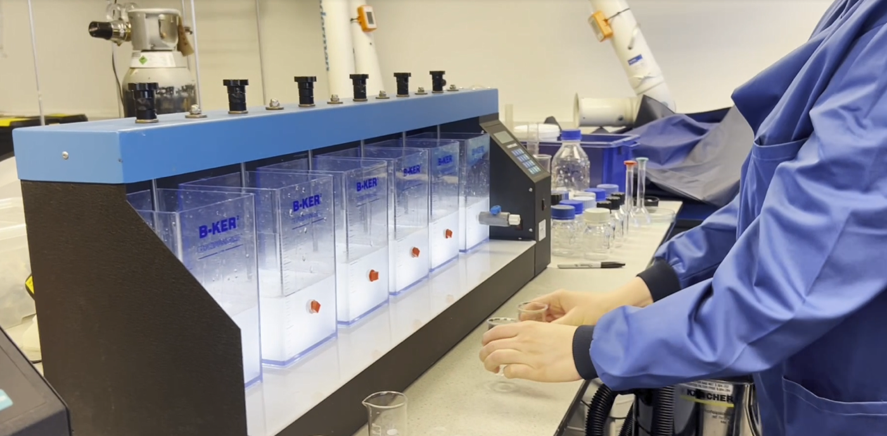

Why it crosses our themes
Microplastics do not respect the boundaries between our research themes. They arrive in wastewater and sludge, they are carried in indoor and outdoor air, and they end up in the waste streams we try to recover resources from. Work on them therefore runs across water, bioresources and indoor air at the same time.
Dr Franja Prosenc leads our work on microplastics and emerging contaminants, within the BioResources and Circular Economy theme.

Finding them
Identifying a particle as a microplastic, and establishing which polymer it is, needs more than a microscope. We use Fourier-transform infrared spectroscopy (FT-IR) and benchtop X-ray fluorescence (XRF) to identify polymers and determine elemental composition in solids such as waste fractions, sludges and soils.
In air, our portable Plair Rapid-E+ detects and characterises particles from 0.3 to 100 micrometres, including microplastics, using scattered light and fluorescence. Because it is portable, the same measurement can be taken in the laboratory and at a real site.
Tracing them
Knowing a contaminant is present matters less than knowing where it came from. Dr Maryam Asachi applies multivariate statistical, spectroscopic and chemometric methods to complex environmental datasets, identifying pollution sources and estimating how much each contributes to water quality.
Environmental datasets are large, noisy and shaped by several overlapping sources at once, so the statistical work is what turns a set of measurements into evidence about origin.
Removing them
Our public health laboratories have dedicated water and wastewater areas with space for experimental rigs, which is where removal is tested: jar tests to compare coagulation and treatment conditions, and analytical instrumentation (gas and ion chromatography, UV-Vis and FT-IR spectroscopy, and a Hach AP3900 robotic analyser) to measure what the treatment actually achieved.